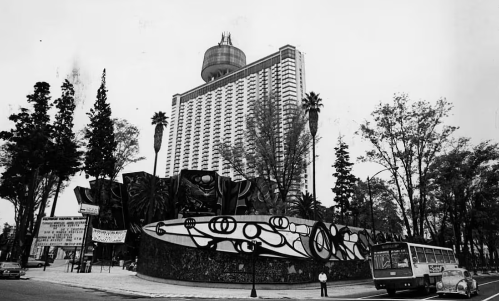
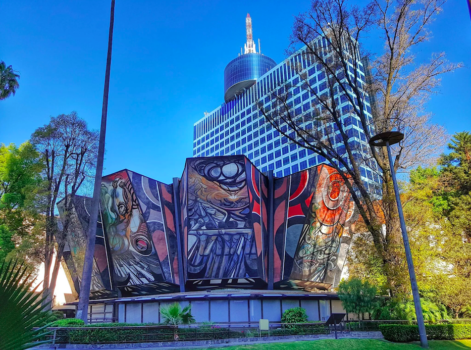

Los Encantos de la Colonia Nápoles: Versatilidad y Ubicación Ideal para Negocios
3 min de lectura · The Pool San Rafael

La colonia Nápoles, ubicada en la alcaldía Benito Juárez de la Ciudad de México, es una joya urbana que combina historia, modernidad y una ubicación estratégica que la convierten en un punto de referencia para negocios y emprendimientos. Con su dinamismo y versatilidad, Nápoles no solo es un lugar atractivo para vivir, sino también para hacer negocios. En este artículo exploramos su versatilidad, su importancia como centro de negocios, te recomendamos 5 cafeterías imperdibles cerca del World Trade Center y te contamos dónde tener tu oficina sin salir del corredor Insurgentes.
Encantos y Versatilidad de la Colonia Nápoles
La colonia Nápoles ofrece una mezcla única de historia y modernidad. Fundada en 1925, ha pasado de ser una zona residencial para las clases medias y altas a convertirse en un importante centro comercial y cultural. Su ubicación estratégica, cercana a avenidas clave como Insurgentes Sur y a centros de negocios como el World Trade Center, la posiciona como uno de los mejores lugares para vivir y trabajar en la Ciudad de México.
La versatilidad de Nápoles se refleja en su capacidad de adaptarse a las necesidades tanto de residentes como de visitantes. Sus tranquilos vecindarios residenciales conviven con áreas comerciales llenas de vida, ofreciendo una calidad de vida sobresaliente. Además, sus espacios verdes, centros comerciales y una creciente oferta cultural y gastronómica convierten a la colonia en un espacio ideal para quienes buscan un equilibrio entre la vida profesional y personal.

Nápoles: La Ubicación Ideal para Negocios
Estar en Nápoles significa tener acceso a una red de oportunidades comerciales y de networking. Su proximidad al World Trade Center y otras áreas clave de la ciudad ofrece una ventaja única para las empresas que desean estar conectadas con lo mejor de la Ciudad de México. La infraestructura moderna, los servicios accesibles y su dinamismo empresarial hacen de Nápoles un hub perfecto para emprendedores y compañías en crecimiento.
Si tus clientes, reuniones o tu equipo se mueven por esta zona, The Pool San Rafael es tu oficina más cercana sobre el mismo corredor: conectada directo por el Metrobús de Insurgentes y a unos minutos de Paseo de la Reforma.

5 Cafeterías Imperdibles en la Colonia Nápoles
Si te encuentras cerca del World Trade Center, en el barrio encontrarás estas 5 cafeterías, perfectas para una junta informal, una pausa o un rato de trabajo. Todas están a menos de un kilómetro de distancia entre sí:
Un lugar acogedor con una excelente variedad de cafés y opciones para desayuno. Recomendamos probar sus pancakes con ate.
Dirección: Pedro Romero de Terreros 19, Col del Valle Nte, Benito Juárez, 03103 Del Valle Nte, CDMX
Especializado en café de origen, es ideal para una pausa tranquila durante el día, leer y comprar algún libro.
Dirección: San Francisco 521 A, Col del Valle Centro, Benito Juárez, 03100 Ciudad de México, CDMX
Una gran opción sobre Insurgentes Sur, conocida por su rica selección de postres y café tradicional. Recomendamos los croissants.
Dirección: Av. Insurgentes Sur 608, Nápoles, Benito Juárez, 03103 Ciudad de México, CDMX
Sofisticada cafetería que sirve variedad de café elaborado con diversos métodos de extracción y postres.
Dirección: C. Texas 81-Local 3, Nápoles, Benito Juárez, 03810 Ciudad de México, CDMX
Un lugar destacado por su excelente café y su menú de platillos mexicanos.
Dirección: Altadena 54, Nápoles, Benito Juárez, 03810 Ciudad de México, CDMX
Tu oficina cerca de Nápoles: The Pool San Rafael
Si buscas una oficina flexible sin alejarte del corredor Insurgentes, The Pool San Rafael te da oficinas privadas para equipos de 4 a 73 personas, coworking, salas de juntas y una terraza de 245 m², todo listo para usar y con acceso 24/7.
- Conectividad: sobre el eje de Insurgentes y cerca de Paseo de la Reforma, para moverte fácil hacia Nápoles, el WTC y el centro.
- Listas para operar: mobiliario, internet de alta velocidad, recepción y limpieza incluidos.
- Espacios para reuniones: sala de juntas para hasta 10 personas y espacios para capacitaciones de hasta 30.
Agenda un recorrido en The Pool San Rafael y conoce las oficinas disponibles.
 15 Datos Curiosos que No Te Puedes Perder de Polanco
15 Datos Curiosos que No Te Puedes Perder de Polanco